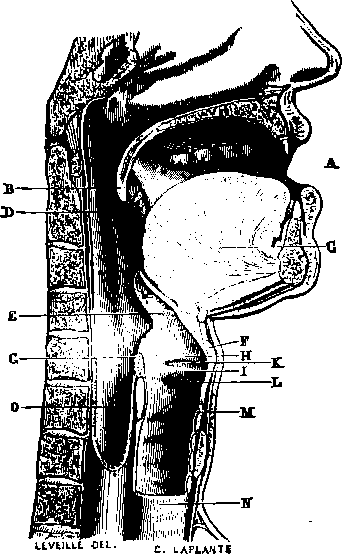

Abdominal Cavity
Description
This section is from the book "Wonders Of The Human Body", by Auguste Le Pileur. Also available from Amazon: Wonders of the Human Body.
Abdominal Cavity
This cavity is the largest in the body; it is situated below the chest, from which it is separated by the diaphragm, and extends to the lower extremity of the trunk. It is divided into several parts or regions, which are—1st. In the upper portion, the epigastrium, corresponding to what is called the pit of the stomach, and the two hypochonders (hypo, under; chondros, cartilage), which rise up from each side of the epigastrium, under the double arch of the diaphragm and under the cartilages of the ribs. 2d. In the middle, the umbilical region, and the flanks or sides. 3d. In the lower portion, the hypogastrium or lower belly, and the iliac fossæ, inclosed by the bones of the same name. The walls of the abdomen are formed principally by muscles and aponeuroses, combined with the vertebral column and the bones of the pelvis. The lower or false ribs have only an indirect connection with the abdominal cavity, resulting from its being set into the bottom of the chest.
The abdominal cavity is lined with a serous membrane called the peritoneum. Like all the membranes of this nature, it is formed of cellular or laminated tissue and elastic fibres; its free surface is covered with an epithelium, a sort of epidermis, which resists the continual friction resulting from the movements of the organs; and lastly, like all its congeners, it is a sac without an opening, folded on itself, and consequently with double walls. The space between these walls is empty, their corresponding surfaces rub freely against each other, and are moistened by a fluid analogous to the serum of the blood, a secretion peculiar to these membranes, and from which they derive their name. The internal wall of the sac covers all the organs which it contains, and the external wall is attached throughout its whole extent to the cavity which it lines. We shall, by-and-by, have occasion to return to the disposition of the peritoneum.
The digestive apparatus is one of the most complex and extensive in the organism; it is accessible to our investigations in all its parts, and we are able to follow the working of the functions which devolve upon it We can observe the metamorphosis which the food undergoes; we can reproduce in our laboratories a part of these transformations; a step farther, and, as Fontenelle has said, we should surprise nature in the very act; but this impossible step is the immense distance which separates inert matter from organized substance, physical and chemical phenomena from the vital functions.
The organs of digestion are the mouth, the pharynx, the œsophagus, the stomach, the liver, and the pancreas. The spleen and kidneys are appendages of the digestive apparatus, but belong rather to the circulatory or excretory.
The mouth forms the entrance to the digestive apparatus; it contains the organ of taste, and serves in eating and in articulating sounds. Bounded above by the palatine arch, below by a muscular wall and by the tongue, on the sides and in front by the cheeks and the lips, the mouth presents in front the opening of the lips, behind, the isthmus of the throat by which it communicates with the pharynx and over which the soft palate falls.
The lips form the anterior wall of the mouth, and are composed principally of the orbicular muscle of the lips, to whose concentric fibres are attached nearly all the muscles of the face; a very thick skin intimately united with the orbicular muscle, a layer of small salivary glands subjacent to it, and the mucous membrane, complete these two movable, extensible, and contractile veils. The lips are an organ of prehension and suction; they prevent, especially the under lip, the escape of saliva; they assist in the articulation of sounds and in playing upon wind-instruments; and lastly, they take an extensive part in the expression of the physiognomy. Abundantly provided with nerves and vessels, the lips are extremely sensitive, especially on their borders, where the skin grows thin, takes a carnation tint, and is insensibly transformed into mucous membrane. Although the orbicular muscle limits them in a measure, and imposes upon them certain functions and a distinct region, they are in reality only the anterior portion of the cheeks, with which they are in constant communication by movement and function.
Fig. 23. Section in the median line through the inferior portion of the nasal fossa, the mouth, pharynx, larynx, œsophagus, and trachea.
A. Mouth.
B. Soft palate. C Tongue.
D. Tonsil.
E. Epiglottis.
F. Thyroid cartilage.
G. Arytenoid cartilage.
H. Superior vocal chord. I. Inferior vocal chord. K. Ventricle of the larynx. I. Larynx.
M. N. Trachea or windpipe.
O. Pharynx, before which is seen the cricoid cartilage.
The cheeks form the sides of the face and the lateral walls of the mouth. They embody in their Substance the muscles intrusted with the performance of the complex functions of the mouth. One of these muscles, peculiar to that part of the cheek which forms the buccal wall, brings the food between the jaws and reacts against the distension of the cheeks by the air. Its action in playing on wind-instruments has given it the name of buccinator; it contributes also to the expression by drawing the commissure of the lips backward, while the great and small zygomatic muscles raise it The triangular muscle of the lips, on the contrary, lets it fall; and lastly, the masseter, a thick muscle of great power, brings the lower jaw against the upper one, and with the temporal muscle performs mastication. The internal face of the cheeks is covered with mucous membrane, and its whole surface is scattered over with little openings, which give passage to the saliva, which is secreted by a great number of glandules analogous to those in the lips. Near the middle is the opening of the canal of Stenon, through which the saliva secreted by the parotid gland is poured into the mouth. This gland is situated, as its name indicates, in front of the ear, and is the most important of the salivary glands.
The teeth are implanted in the alveolar border of the upper and lower jaw, forming two symmetrical arcades, and when the mouth is closed they circumscribe its limits like an internal wall. They are twenty in number in the child, and thirty-two in the adult They are divided into eight incisors, four canine, and twenty molars. The last four molars are called the "wisdom teeth." A tooth is composed of three distinct parts: the pulp, the ivory, and the enamel Vessels and nerves penetrate the pulp, but do not go beyond; the ivory which envelopes the pulp constitutes the root and the crown of the teeth. That part of the tooth where the crown joins the root is called the neck. This last is covered with a layer of bony tissue. The crown commences at the neck, and is overlaid with the enamel, a tissue very poor in animal substances, and almost inorganic. The teeth are not bones; though their roots have an osseous covering, they do not present either in their essential parts—the ivory and the enamel—or in their mode of development and their physiological conditions, any connection with the osseous system; they are considered as analogous to the epidermic productions, the hair, nails, etc, which they resemble in many respects.
Continue to:
- prev: Chapter VII. Digestion
- Table of Contents
- next: Palate